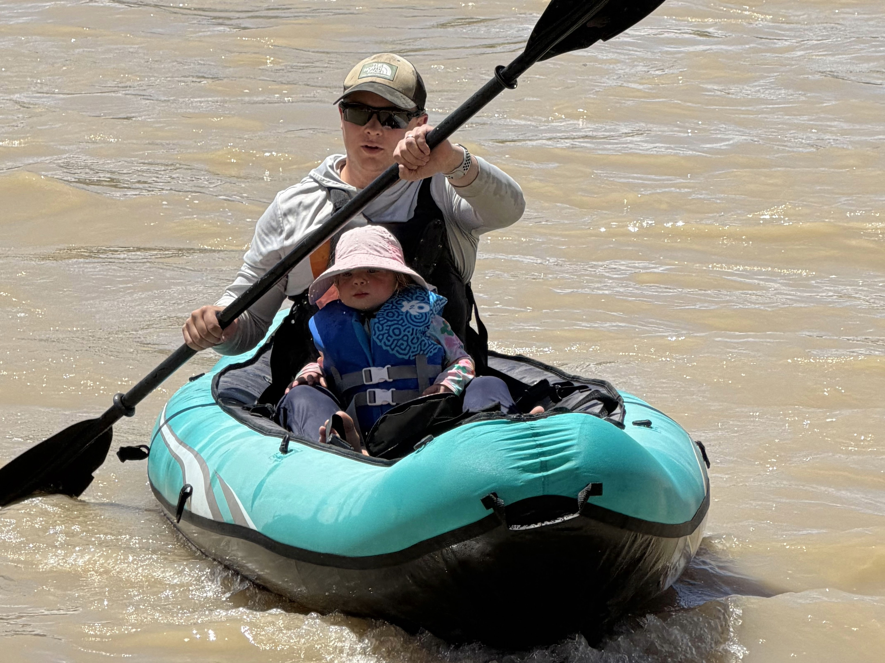
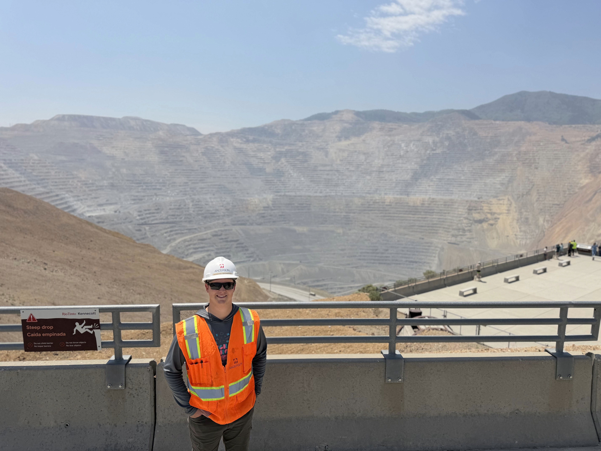
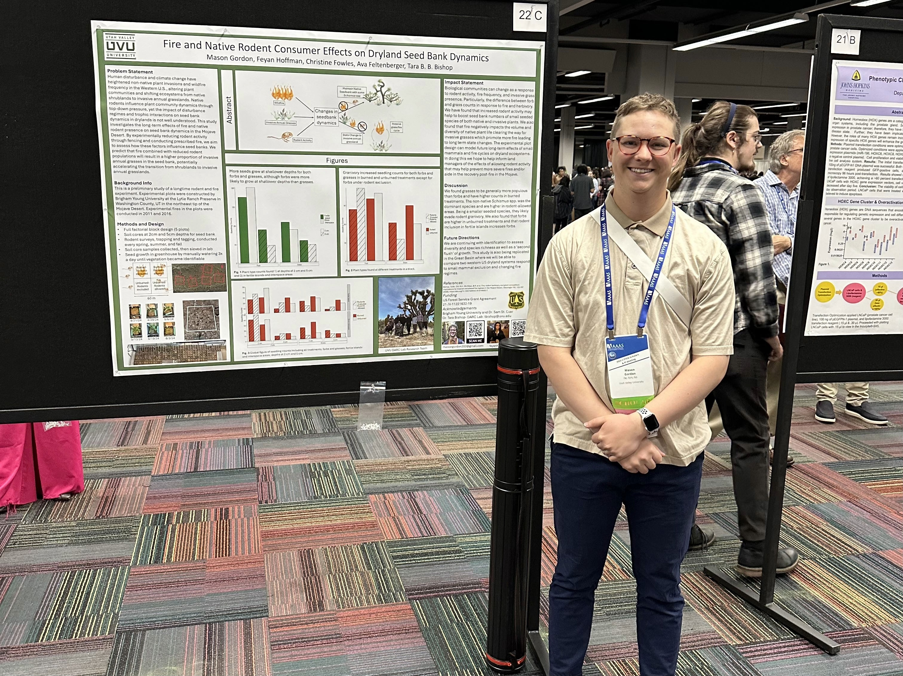
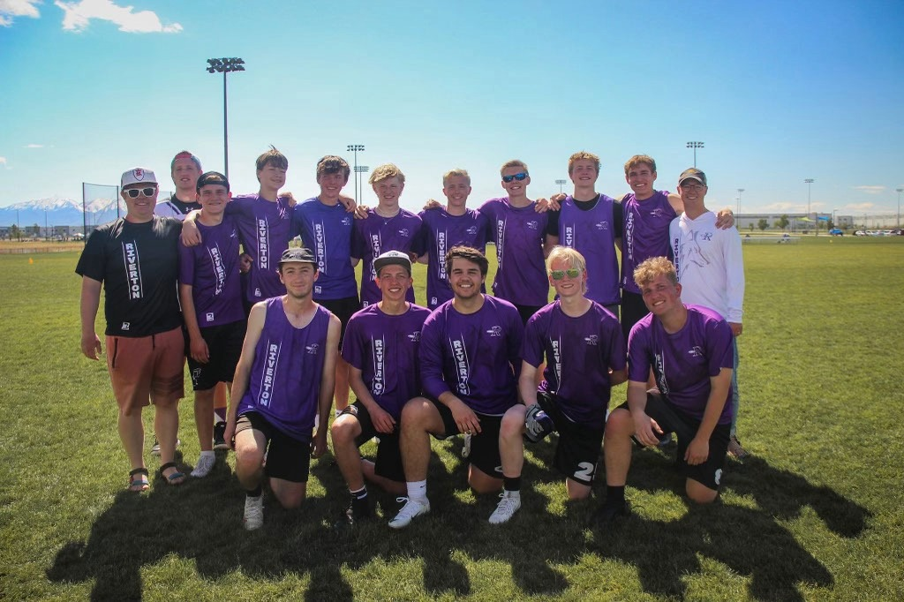

More About Me
Outside of spatial data science, my life revolves around my family, staying active, and getting outdoors.


Family
This is my family. Margo is three years old and Mable is three months old. We love to be outside traveling the western United States looking for good camping spots. We frequently visit Green River, St. George, Moab, Yellowstone, the Tetons, and Zion. The more camping trips we can fit into a year, the better. Getting through school with two young children was most definitely a challenge, but they were my motivation.
Work & Undergraduate Research
I work full-time for Anderson-Psomas as an environmental scientist and GIS specialist. The majority of my work is as a sub-contractor for Kennecott Copper Mine, where we conduct environmental testing of their soils for heavy metals (particularly arsenic and lead) before they can be taken offsite for disposal. All sampling requires location data to be recorded for subsequent reporting and occasional statistical analysis. I handle much of the back-end GIS work, building relational databases and creating optimized field maps for efficient data collection.
I was also involved with two labs while an undergraduate student at Utah Valley University. The first lab focused on the heavy metal uptake of Phragmites australis in and around Utah Lake, and I had the opportunity to present this research in poster format at the Geological Society of America conference in Pittsburgh, Pennsylvania. The second lab focused on the ecological invasive grass fire cycle in the Mojave Desert, tracking differences in invasive grass species and density in burned and unburned areas over a decadal time scale. I was fortunate enough to present this research at both the Ecological Society of America conference in Long Beach, California, and at the Pro-STEM conference in Chicago, Illinois. A paper has been submitted and is currently under review for this research, on which I am a co-author.




Ultimate Frisbee
I have been playing competitive ultimate frisbee for over a decade now. I began as a freshman in high school in 2015 and never stopped. In 2021, I began coaching my old high school team, and as the head coach, I managed over 50 players across an A and a B team alongside several assistant coaches. I coached for four years, finishing my last season in 2024 after having my oldest child. I also had the opportunity to play and captain the Utah Valley University team, competing in tournaments across California, Washington, Arizona, Montana, Utah, and Colorado. During and after my time at UVU, I have played several years in the club division, traveling to many of those same states.